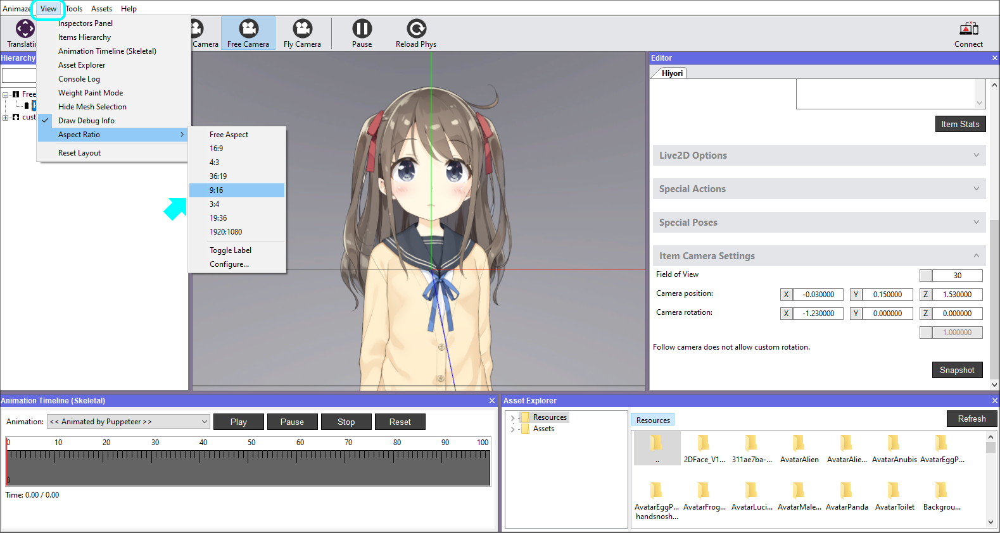
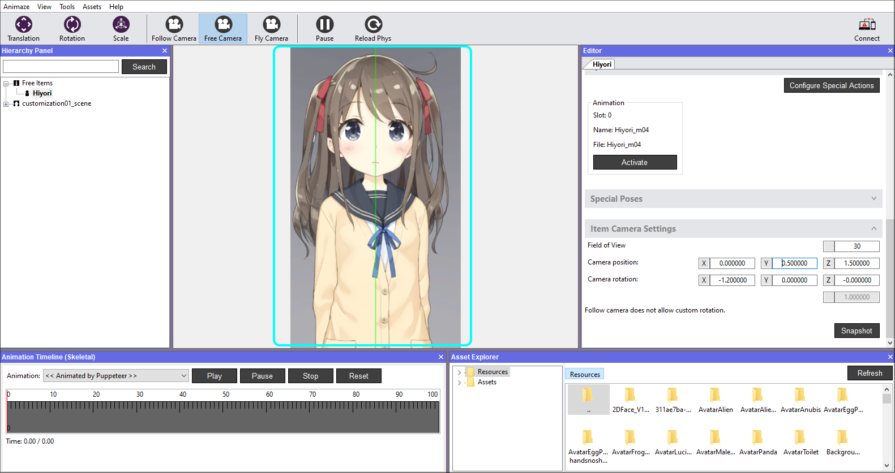

Frame the avatar
You can control how the avatar is displayed in the app by configuring the camera settings. Don’t worry too much about framing your avatar perfectly. You can refine how the avatar is framed in the app by pinching to zoom in and out.
Here is how to do it:
1. In the Editor Panel to the right, scroll down and click to expand the Item Camera Settings option.

2. By changing the values for the axis XYZ coordinates and the Field of View on FlyCamera, you can set a different angle view. Move the camera view using the mouse/keyboard. Once the avatar has the desired framing, press the Snapshot button to generate the camera transformation (translate the coordinates).


Additionally, you can toggle the Aspect Ratio of the Viewport, for more sense of how the framing looks. Go to View > Aspect Ratio > pick the one you need. Click the Snapshot button once you’re happy with the framing.


3. Save the item in the Hierarchy Panel to keep the settings for next time you load the avatar.

As you create your own or modify existing avatars, you may need to reconfigure certain elements. Learn more about those advanced configurations in the following sections.